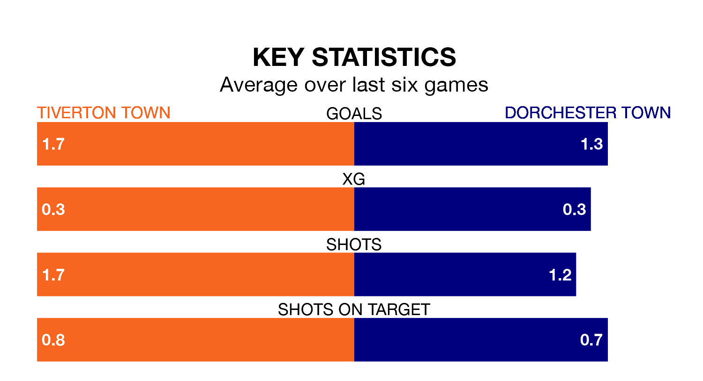

Tiverton Town welcome Dorchester Town to Ladysmead on late Tuesday looking to pick up points to end their three-game losing streak.
Tiverton's struggles have left them with just four points from their last six Southern League Premier – South matches, while their opponents have earned 11 from a possible 18.
Tiverton are 20th in the table after 29 games, of which they have won six and drawn nine, earning 27 points.
Dorchester are three places ahead of Tiverton Town in 17th, with nine wins and six draws putting them on 33 points.
In the last 10 years, Tiverton and Dorchester have played each other on 10 occasions. Tiverton won three of them, Dorchester five, and they drew twice.
On average, Tiverton scored 1.2 goals and Dorchester 1.8 in those matches.
Their last meeting was on February 4 2023, when Tiverton won 3-0 at home.
With 42 goals in 29 games so far this season, Dorchester Town are scoring at below the league average rate with 1.4 goals per game. And they are conceding more than average, letting in 56 goals at a rate of 1.9 per game.
The hosts are also below average scorers, with 1.6 goals per game, compared to a league average of 1.7. They have conceded 2.0 goals per game.
Tiverton's last match was on Saturday, a 2-0 loss against Walton and Hersham.
Dorchester beat Bracknell Town 3-1 last time out, also on Saturday.
Updated: 12:18 (UTC), 19/02/24